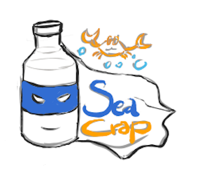

Zéro déchet · Rade de Brest
Prends le déchet en photo, choisis son type et vérifie sa position.
Recherche de ta position…
Touche la carte pour déplacer le repère si besoin.
Choisis un pseudo pour gagner des points, remplir ta collection et apparaître au classement.
Connecté en tant que
Signalement : +10 points · Ramassage : +20 points
Le classement des joueurs arrive au sprint 4.